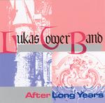

Home Artist links Label link

Lukas Tower Band - After Long Years
| Artist: | Lukas Tower Band |
| Title: | After Long Years |
| Label: | independent |
| Length(s): | 72 minutes |
| Year(s) of release: | 2004 |
| Month of review: | [06/2005] |
Line up
Angela Maier - vocals
Wolfgang Fastenmeier - guitars, percussion
Gerhard Heinisch - bass
Fredy Orendt - keys, flute, quena, accordion
Albrecht Pfister - saxes, flute, clarinet
Thomas willecke - drums, bodhran
with:
Droni Ampenberger - violin
Anderl Moertl - trumpet
Stephan Muelberger - trombone
Regina Willecke - piccolo
Tracks
| 1) | Indian Beard | 8.09
|
| 2) | Ravens | 5.39
|
| 3) | Dreams To Sell (2) | 6.39
|
| 4) | Le Pocal D'olives (reprise) | 7.18
|
| 5) | Ring Of Dyfed | 7.38
|
| 6) | Lalla Rookh | 5.01
|
| 7) | Wanderer | 6.25
|
| 8) | Thomas The Rhyhmer | 8.28
|
| 9) | Lucy | 5.34
|
| 10) | Work Of Time | 6.18
|
| | 11 Sparks Of Fire | 3.59
|
Summary
The Lukas Tower Band is a German band combining progressive, blues, jazz and even some folk influences. This release celebrates their twentieth anniversary.
The music
The music doesn't sound what one would associate with progressive, yet there are clearly elements common to progressive music, both in the use of synths and guitar, as well as the Tull like flute. At most moments though synths both and brass refer to the sort of soft jazz you'd associate with hazy bars, Dreams To Sell (2) being a good example of this. A track like this makes that the band can easily be perceived as a cocktail bar orchestra, near muzak. this is helped by the often sketchy instrumentation.
One could say that one major contributor to my doubt on this band is the slow and halting bridges used to string the parts of a song together, featuring melodically unimportant and uninteresting chords, only intended as glue. The notes seem to not flow into music, or at least not often enough. This results in plodding compositions, especially where the vocal sections are concerned. During the instrumental sections using violin or flute some fluency comes in at time, immediately leading to a nicer sound.
Closer Sparks of Fire is a surprising, happy sounding early Shakatak instrumental type track. Different from the tracks preceding it, without helping.
Conclusion
The compositions are not really convincing, nor is the performance. The fluent sections are far too few and far between to carry the weight of this album. The result is an album of mainly poor tracks, and such a collection of self similar tracks can not be called an attractive proposition. It wears one down enough to make the album's end a relief.
© Roberto Lambooy